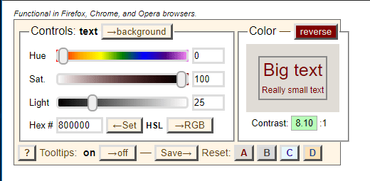
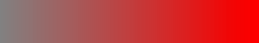

Understanding color, luminance, and saturation is important in meeting WCAG 2 accessibility guidelines in terms of ensuring enough color contrast for sighted users with color blindness or reduced vision and preventing seizures and other physical reactions in people with vestibular disorders.
Colors, and how they are used, are a major component of accessibility. At the surface, the subject seems simple, but it is actually a complex subject because color is as much about the physiology of the eye and human perception as it is about light emitting from a computer screen. Environment matters. Perception of color in a well-lit room will be different than perception of that same color on that same computer screen in a dark room. In terms of accessibility, the use of certain color-combinations have more impact than others. Font size, font style (some fonts are so thin or fancy that they present accessibility problems on their own), background color, the size of the background space around the text, even pixel densities and more all affect how color is delivered from the screen. (See Understanding Success Criterion 1.4.3: Contrast) A viewer's distance from the screen, the ambient background, the health of his eyes, and more all affect how that color is received by the viewer. How the viewer perceives color after it gets to his eyes is yet another matter, and can be affected by overall health. Luckily, CSS Media Queries Level 5 will be a game-changer in accessibility initiatives, because it will allow users to select settings that accommodate their needs best.
Color, contrast, and luminance are among the most central and critical concepts to creating accessible web content with color. Luminance is of particular importance, however, because at the end of the day, understanding of what it is and how it is employed enables accessibility for those who are color-blind, as well as those who can perceive color. It is the luminance contrast that enable the color-blind to distinguish dark against light.
Luminance must be established before the contrast may be. When speaking of color contrast, W3C formulas are actually incorporating luminance, not just the colors ("hues") themselves.
Terminology can be confusing, because different terms are often used to describe the same thing. "Luminance" and "Saturation" are particularly important to get right. For example, "saturation" is known as "chroma" in some circles. In others, "chroma" and "saturation" are two different concepts. The "L" in the HSL color space is sometimes referred to as "luminosity," other times as "lightness." Even something seemingly simple like naming common colors can be open to debate. For example, the color "crimson red" may be described in hex values as #990000 by some and #DC143C by others. For the purposes of this document, we'll use terminology as it is defined in the W3C, in the CSS Color Module Level 3
When working with color, it's important to know which "color space" you are working in, as different color spaces map to different measurement systems. Currently, the RGB color space predominates as the space web developers work in. HEX, RGB and HSL color spaces all are measured differently. Conversions between the color spaces are usually needed. Because of the current domination of the RGB color space in measuring color output, most calculations in this document are presumed to be in the RGB color space, and very specifically, in the sRGB color space.
The MDN document, <color> notes "The CSS data type represents a color in the sRGB color space." Color has many ways of being defined, including RGB, RGB decimal, RGB percent, HSL, CMYK among others.
For digital concerns, much of the technology has historically resided in the RGB color space. This is because the companies behind the evolution of digital technology set the standards, and these standards still retain a powerful presence today. This is evolving, and new methods for measuring color involve measurements using other color spaces, but color measurements in the RGB color space still predominates, and this includes video production. The RGB color model is extended to include “alpha” -- RGBA -- to allow specification of the opacity of a color.
There's movement towards adopting the use of HSL color values rather than RGB values is CSS Color Module 3 (see section 4.2.4), the rationale being that RGB is hardware-oriented, reflecting the use of CRTs, and that RGB is non-intuitive. That said, HSL colors incorporate lightness, not luminance, and this is a significant consideration. Note that in that same section of the CSS Color Module 3, there are algorithms available to translate the HSL to RGB.
Newer technologies, such as OpenGL and Direct3D incorporate support for the sRGB gamma curve, although some articles for OpenGL reference use of RGBA rather than sRGB. WebGL is usually in the RGBA format; see an example of how it is used in "Clearing with colors".
Where accessibility is concerned, however, standards and guidelines are currently written predominantly using the sRGB color space, especially as it applies to color contrast ratios. In speaking specifically to relative luminance, WCAG's definition of relative luminance notes:
"Note 2: Almost all systems used today to view Web content assume sRGB encoding. Unless it is known that another color space will be used to process and display the content, authors should evaluate using sRGB colorspace. If using other color spaces, see Understanding Success Criterion 1.4.3."
CSS Color Module Level 4 will likely change the domination of the sRGB color space in the future.
It's important to know that there are variations even within one color space, such as the RGB color space. For example, variations of the RGB color space include RGB, sRGB, Adobe RGB, Adobe Wide Gamut RGB, and RGBA, among others And, one color within the same color space may be expressed in different ways. Looking at how the RGB color space is used to describe a color "red", you can see that the same color may be expressed in a shorthand, three-digit hex number that converts to a rgb value, as a full six-digit hex number that also converts to the same rgb value, or as a rgba value, expressed in percentages.
em { color: #f00; } /* #rgb */
em { color: #ff0000; } /* #rrggbb */
em { color: #ff0000ff; } /* #rrggbbaa */
em { color: rgb(255, 0, 0); }
em { color: rgb(100%, 0%, 0%); }
em { color: rgb(255, 0, 0, 1); }
em { color: rgba(100%, 0%, 0%, 100%); }
Conversions are not casual. See the Stack Exchange article, "Formula to Determine the Brightness of RGB Color". There are many online tools that can convert RGB to HSL for you, with both the RGB hexadecimal and CSS function syntax. A great example of a tool that converts colors for you is Tom Jewett's "mini color selector" with HSL, RGB, Hex options for checking contrast in the browser.

Contrast between colors ("hues") is a critical component, but the use of color ("hues") alone is not enough to create accessible content. As mentioned before, any calculation of contrast must include luminance in the calculation.
In addition, the "shape" of the text itself will matter. Thin letters will be harder to read than thick ones; all type faces need space to "breathe" for human perception. In general, for accessibility purposes, the more contrast the better. That changes with animation. "Safer" animation means images with less contrast, not more. For more on color contrast in animation, see Three Flashes or Below Threshold Understanding SC 2.3.1
Icons also need sufficient contrast for perception. See WCAG 2.1 technique G207
It is the difference in the luminance of a color that enables us to see contrast. Here is the definition of Relative luminance as defined by the W3C:
"the relative brightness of any point in a colorspace, normalized to 0 for darkest black and 1 for lightest white"
This statement is of course accurate, but may be confusing when used in reference to the RGB color space, which is an integer between 0 and 255. White has 100% relative luminance, black has 0% relative luminance (in most but not all literature). Interpreting for the W3C standard above, that would mean that white, normalized to 1, would have an RGB value of rgb(255, 255, 255) and black, normalized to 0, would have an RGB value of rgb(0,0,0)
Where do these numbers of 0 to 255 come from? Historically, graphics engines store the color channels as a single byte; that means a range of integers between 0 and 255.
The luminances of the primary colors are different. Yellow has a greater luminance than blue, for example. This was done by way of design, "to achieve white alignment of the monitor" according to the NASA document, "Luminance Contrast in Color Graphics"
Once luminance is established, the color contrast ratio can be established. A color contrast ratio is meaningless without its luminance component.
Where human perception is concerned, a difference in luminance matters more than a difference in color. This is important, luminance contrast enables the development of content that even those with color-blindness can see. With this understanding, luminance may be manipulated so that colors that are difficult to see because of their low luminance could be made more legible by placing these colors against another that had contrasting luminance. An interesting study by NASA on the color blue, for example, noted that this color, which has low luminance, can be made legible if "care was taken to achieve adequate luminance contrast" (From the article, Designing With Blue)
WCAG 2.1 defines relative luminance as follows (as of July 2019):
For the sRGB colorspace, the relative luminance of a color is defined as L = 0.2126 * R + 0.7152 * G+ 0.0722 * B where R, G and B are defined as:
and RsRGB, GsRGB, and BsRGB are defined as:
The "^" character is the exponentiation operator. (Formula taken from [sRGB] and [IEC-4WD]).
When it comes to "perceiving" colors, not all colors are created equal. Our eyes are tuned to perceive certain colors, Red, Blue, and Green, but we do not perceive these colors with equal strength. According to the article, Hypersensitive cones, the authors note that "By population, about 64% of the cones are red-sensitive, about 32% green sensitive, and about 2% are blue sensitive." Surprisingly, although cones that are blue-sensitive typically make up the fewest number of cones, they are also the most "sensitive" to color.
Put another way, as humans, the color blue is perceived differently than other colors, for multiple reasons. First, because the blue cones are actually the most sensitive of the three, second, we have fewer blue cones than red or green, and third, it so happens that these "blue sensitive" cones tend to be located at the rims of our eyeballs, away from the center (fovea centralis) of the back of the eyeball, where the red and green cones tend to cluster. There is software that actually takes advantage of that fact. Because we do not perceive the color "blue" as well as other colors, for example, some algorithms for compressing image sizes remove the parts of the image with "blue" in them more heavily than other parts of an image. This fact is also used by television signals to allocate less bandwidth to the yellow-blue part of their signal, thus saving bandwidth.
Another important point to consider is the ambience of light surrounding the color. The color will appear differently if the background lighting is dark, or light. One of the greatest gifts to accessibility now in development is the CSS Media Queries Level 5. These queries will allow users to choose contrast levels that is right for them, and enable them to adjust these levels depending upon where they are, and what kind of screen they are using. The MDN document, Ambient Light Events, describes an experimental technology worth watching; this technology would enable a web page to be aware of any change in the light intensity, and consequently, adjust the text accordingly. This would be a great boon to those with motor skills problems, or do not have the use of their hands.
To summarize, color is as much about human physiology and perception in the brain as it is the measurement of light coming from a computer screen. It's also important to understand that the ambient light environment affects the ability to perceive color and contrast. Light, and its measurements, are linear, but human vision and human perception are not.
Contrast alone is not enough when it comes to accessibility considerations. In the case of animation, certain color combinations are more likely to cause photosensitive seizures to those who are susceptible to them than others. For example, alternating flashes between red and blue is more problematic than alternating flashes between green and blue. It has been theorized that this is because the "red" sensitive cones of our eyes, which tend to cluster around the fovea (near the center) are physically located at a different location than the "blue" sensitive cones of our eyes, which are located away from the fovea and towards the rims. The electrical signals that go from eye to brain have much to resolve between them as the information is processed in our brains.
In the article, Certain Colors More Likely To Cause Epileptic Fits, Researchers Find, the authors noted that "..complexities underlying brain dynamics could be modulated by certain color combinations more than the other, for example, red-blue flickering stimulus causes larger cortical excitation than red-green or blue-green stimulus.."
Our eyes don't adapt equally, in the same way, going from light areas to dark ones, and vice versa. This is due to the physiological ways our eye are built. This affects the ability of a user to read text against a background. There's (at least) two kinds of adaptation that take place: local adaptation, and adaptation to an ambient environment.
Local adaptation takes place right on the "page" a reader is looking at. For example, if you have blue text within a gray "highlighted" area, your eyes will perceive that same blue text with a gray highlight differently if it is in a black div, or a white one. This is called local adaptation. This difference in the ability to perceive the text is affected even though the ambient lighting of the room does not change.
The implication is that web developers who seek to improve legibility of text against a background can take advantage of the principles of local adaptation.
Dark adaptation, to low luminance, is slow. When you come in from outside where the sun was bright, and walk into a dark room, you are experiencing dark adaptation. It can take a few minutes to adjust to this.
Light adaptation is the reverse. Going from a dark room into bright sunlight is quicker, but it can also hurt.
The implication is that web developers who seek to improve legibility of text in which the ambient conditions of a room have changed can take advantage of CSS Media Queries 5 Environment Media Features, when these features become available.
Saturation deserves special mention in discussions about color ("hues") and accessibility. Generally speaking, most of the focus is on luminance when attempting to ensure that there is enough contrast between text and its background, or, in evaluating for the possibility of inducing seizures in those sensitive to photosensitive seizures. There is one aspect about color ("hues"), however, independent of luminance, that deserves special attention as it applies to accessibility, and that is the concept of saturation. This is because of its ability to cause seizures in those susceptible to photosensitive seizures, no matter what the luminance of the color.
The expert consensus of the Epilepsy Foundation noted the following in their publication, Photic- and pattern-induced seizures: expert consensus of the Epilepsy Foundation of America Working Group
"Irrespective of luminance, a transition to or from a saturated red is also considered a risk"
Saturation is sometimes described as the "purity" or "intensity" of a color, and although these are good definitions for "pigments" in an artist's paint set, they are not quite accurate as definitions for color from a computer screen. When it comes to color on a monitor, saturated colors are of a particular wavelength. While the definition of saturation for each of the color spaces may differ, saturation is readily measured. The key is to know which color space you are working in, and be ready to convert it, if necessary. The color spaces that come up most frequently when discussing photosensitivity are the RGB, the HSL, and HSV color spaces. It's important to know what color space you're working with. For example, saturated colors have lightness 0.5 in HSL, while in HSV they have value 1. Saturation in the RGB color space is usually indicated by an RGB value of 255 for the color in question. For example, a saturated red of hex value #ff3300 has an RGB value of rgb(255, 51,0). A different saturated red with a hex value of #ff0000 has an RGB value of rgb(255, 0,0). Both are "saturated" reds. They are two different "hues", but are both considered to be a saturated color.
Saturation is not brightness. Brightness refers to how much white or black is mixed in with a color. One can decrease saturation by adding white, black, or gray to the color; to take the example further, brightness can be increased by adding the color white, which also reduces saturation. A common example is to add white to red to get the color pink. Pink is considered a desaturated red.
There is a loss of saturation at the extremes of luminance, at the extremes of black and white. NASA's article, Luminance Contrast in Color Graphics, in the section titled, "The effect of luminance on saturation", points out that there is a loss of saturation at low luminances. and also, "..the loss of saturation at high luminances--the colors converge on white."
Not all colors ("hue") are processed the same way by our brains. Human physiology and psychology are affected by the color "red" generally speaking, in ways different from that of other colors. We respond physiologically as well as psychologically to colors. For example, it has been demonstrated that some colors are more likely to cause epileptic fits than others; There is an interesting observation in a discussion thread, "What is the “grayscale” setting for in accessibility options?" in which one of the participants states: "I have photo-triggered ocular migraines and wish everything had a greyscale option. Even better a red or violet scale, but that is probably very specific to me."
"Saturated Red" is a special, dangerous case, and there are special tests for it.
The concept of color saturation is a difficult one to understand when only looking at numbers and terminology, so consider looking at the image below to illustrate the concept of saturation in a color. Wikimedia Commons provides a great image for illustrating red saturation. It's the same "color" going from least saturated on the left hand side to most saturated on the right hand side. (Thanks to the author, Datumizer, for this example)

More than one "red" color may be considered a "saturated" red. For example, in addition to the color #990000 described above, the color #8b0000 also has a saturation of 100%. Not all saturated reds may be represented well in the RGB spectrum, or other spectrums commonly used in web development. According to Wikipedia's page on "Shades of Red", the color "Carmine" is a saturated red in which, in its pigment form, mostly contains the red light with wavelengths longer than 600nm; the article makes the special note that "Carmine" is close to the extreme spectrum. This places it far beyond standard gamuts (both RGB and CMYK), and its given RGB value is a poor approximation only."
In addition to a red environment affecting the cognitive function of those with traumatic brain Injury, color in the red spectrum wavelength requires special attention and tests. Dr. Gregg Vanderheiden, when testing the Photosensitive Epilepsy Analysis Tool, noted seizure rates were much higher than expected. They found that we are much more sensitive to saturated red flashing. (See the video, The Photosensitive Epilepsy Analysis Tool)
Exploring the RGB color space further, as it is the color space used by the data type <color>, note that there are actually multiple "versions" of the RGB color space, such as sRGB, scRGB, and RGBA. There are also different ways to reference RGB: RGB Decimal reference: 153, 0, 0 and an RGB Percent reference: 60, 0, 0. {{domxref('Window.getComputedStyle()')}} returns values using RGB Decimal Reference scale. For example, calling Window.getComputedStyle() on a div with a background-color: #990000; set returns the computed background color as rgb(153, 0, 0) -- the RGB Decimal reference.
Window.getComputedStyle() measures color in terms of RGB. CSS Color Module Level 3 added HSL color values, stating "CSS3 adds numerical hue-saturation-lightness (HSL) colors as a complement to numerical RGB colors. It has been observed that RGB colors have ... limitations". One of those limitations is that RGB is tied to computer hardware, rather than how the human eye perceives color.
When evaluating luminance, bear in mind the W3C's wiki on relative luminance "Almost all systems used today to view Web content assume sRGB encoding. Unless it is known that another color space will be used to process and display the content, authors should evaluate using sRGB colorspace. If using other color spaces, see Understanding Success Criterion 1.4.3.".
The "math" for the calculations is spelled out in WCAG 2.1 in the definition for relative luminance, and is as follows:
For the sRGB colorspace, the relative luminance of a color is defined as L = 0.2126 * R + 0.7152 * G+ 0.0722 * B where R, G and B are defined as:
and RsRGB, GsRGB, and BsRGB are defined as:
There is active discussion and investigation underway concerning relative luminance, contrast, and more. See W3C/WCAG issue #360.
R, G, and B have distinct weights in the relative luminance formula.
Calculations for relative luminance are not casual ones, luckily, there are tools that will do it for you. Here are a few.
Some notes:
Luma and luminance are not the same. From IEC 61966-2-2:2003(en), "Video systems approximate the lightness response of vision by computing a luma component Y′ as a weighted sum of nonlinear R′G′B′ primary components: Each RGB signal is, comparable to the 1/3 power function with an offset defined by L*. Luma is often incorrectly referred to as luminance."
Luminosity and Luminance are not the same, but sometimes, in the HSL color spectrum, they are sometimes used interchangeably. Sometimes the "L" in HSL stands for luminance, and sometimes, for luminosity -- and also, has been referred to as "lightness"
Luminance and brightness are not the same. Brightness is a perception.
Luminance and lightness are not the same.
Luminance and reflected light are not the same.
Many, many thanks to Wayne Dick of the Low Vision Task Force of the W3C and the intense discussions on luminance; to Teal for his help and discussions on human perception of the color blue and how software companies create algorithms for image output based on it; and to Tom Jewett from Knowbility; for the tools and educational resources he developed, that help us all.
{kind=link}